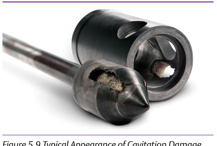

Field Inspection, Three Weeks In

- 1The trim is pitted and gouged — a cinder-like erosion pattern, not the smooth polish of simple wear
- 2The calculated Cv (5.6) was correct. This trim is failing for a different, specific reason the selection steps never directly tested for
- 3That reason has a specific, teachable mechanism — the flowchart's own step-3 cavitation check, skipped in Case C's spec
Control Valve Handbook, 6th ed., Figure 5.9 “Typical Appearance of Cavitation Damage,” p.130. Component Index: cvh-topic-cavitation, cvh-cmp-cavitation-damage-photo.